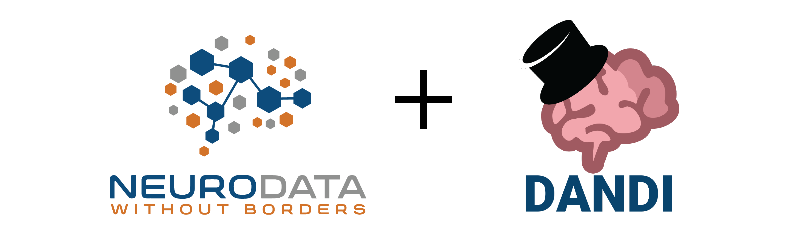

The Neurodata Without Borders (NWB) team is holding a tutorial on the NWB data standard and DANDI Archive during the tutorial session of COSYNE 2024.
The NWB project is an effort to standardize the description and storage of neurophysiology data and metadata. NWB enables data sharing and reuse and reduces the energy barrier to analyzing data both within and across labs. NWB is more than just a file format; it defines an ecosystem of tools, methods, and standards for storing, sharing, and analyzing neurophysiology data, including extracellular electrophysiology, intracellular electrophysiology, optical physiology, and behavior.
The DANDI Archive now has 175+ publicly available neurophysiology datasets stored using the NWB data standard, including from the Allen Institute, International Brain Laboratory, MICRONS project, and over 100 individual labs.
At this tutorial, we will teach you how to:
convert neurophysiology data to NWB and publish it on the DANDI Archive
find relevant data on the DANDI Archive and use the DANDI compute resources
read NWB data streamed from DANDI or downloaded locally
process and analyze NWB data using popular tools such as SpikeInterface and Pynapple
Bring your laptop to work along with the demonstration. To get familiar with NWB and DANDI prior to attending, please refer to this documentation.
There is NO additional fee to attend. When registering for the main meeting, select the “Neurodata Without Borders Data Standard and DANDI Archive for Neurophysiology Data Tutorial”.
8:00 - 8:30: Lecture: Introduction to the NWB data standard and DANDI Archive
8:30 - 8:45: Follow along: Convert common neurophysiology data formats to NWB and publish NWB data to DANDI
8:45 - 9:00: Follow along: Use the DANDI Archive and community tools, such as Neurosift and NWB Widgets, to find and visualize relevant data
9:00 - 9:30: Follow along: Read NWB data streamed from DANDI and downloaded locally, and analyze NWB data using popular tools, such as:
SpikeInterface to spike sort raw extracellular electrophysiology recording data streamed from DANDI & write the output back to NWB
Pynapple to perform common analysis functions on NWB data, such as compute tuning curves and cross-correlograms
TBA
Learn more about upcoming and past NWB events on our main page.
New to NWB? Learn more about the NWB software ecosystem, how to convert data to NWB, how to read data in NWB, and much more in our NWB Overview website.